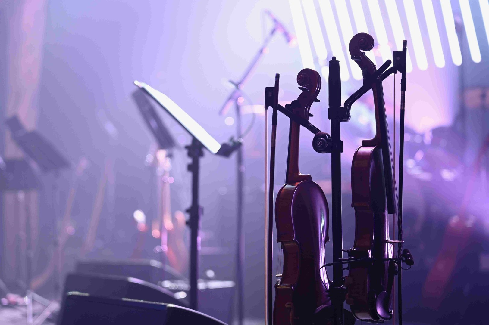
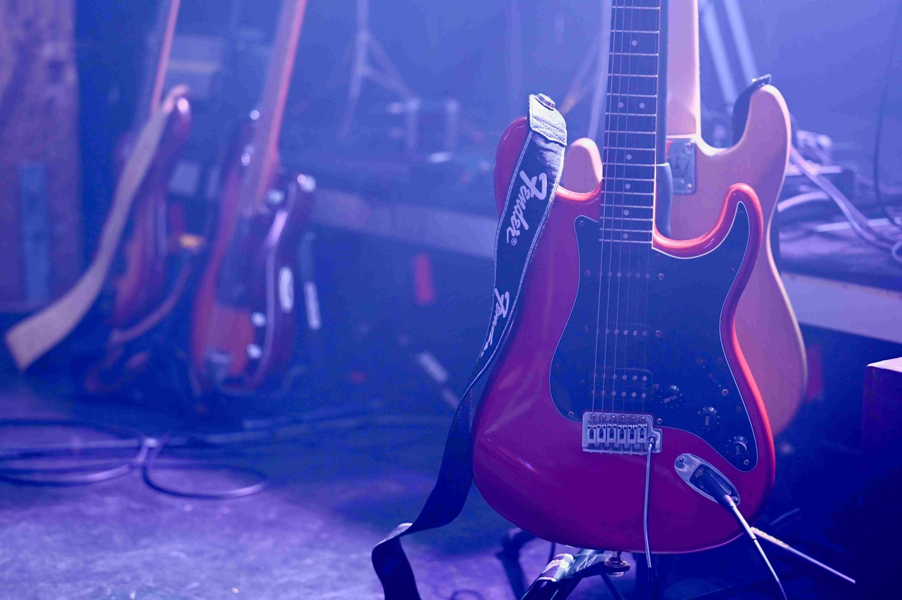
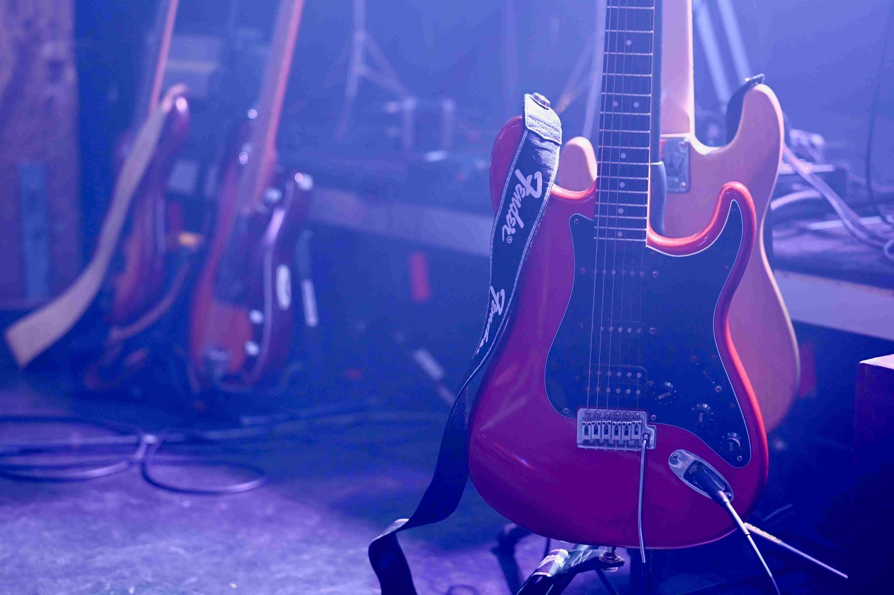

Offres musicales personnalisées
L'OrchestraKot joue pour vous!
Nous accueillons à bras ouverts les demandes d'animation musicale lors de vos événements, aussi divers soient-ils. Que ce soit pour des kots à projets, pour des particuliers, des remises de diplômes ou encore d'autres activités, nous sommes ouverts à tout!

Le Concert
L'événement principal de l'OrchestraKot.
Chaque premier quadrimestre, nous faisons une représentation à la Ferme du Biéreau, avec chaque année un thème différent. Notre concert c'est quoi ? C'est un concert de 2 heures tenu dans la grange de la Ferme du Biéreau où nous jouons de la musique autour d'un thème pour vous ambiancez vous qui venez à cet événement !
Il se déroule généralement à la mi novembre. Pour être tenu au courant de quand et où cela se passe, allez sur notre page Facebook. Cette année, il se déroule le 14 novembre à 20h. Reservez vos places :
Voici le trailer du concert pour vous donner un avant goût
Initiation aux instruments
Jouer sur plus d'une dizaine d'instruments en une soirée? C'est par ici que ça se passe!
L'Orchestrakot permet à tout le monde de découvrir un ou plusieurs nouveaux instruments lors de nos soirées d'initiation. De la batterie à la clarinette en passant par la harpe, nous avons une belle panoplie d'instruments à vous faire (re)découvrir. Chaque membre de l'équipe aura le plaisir de vous apprendre à jouer quelques notes sur son instrument.
Avant tout, l'initiation aux instruments est un moment de plaisir et de découverte, le tout dans une ambiance décontractée. Que vous n'ayez jamais touché un instrument ou que vous soyez un musicien aguerri, tous sont les bienvenus!
Pour être tenu au courant de quand et où cela se passe, allez sur notre page Facebook !
 
